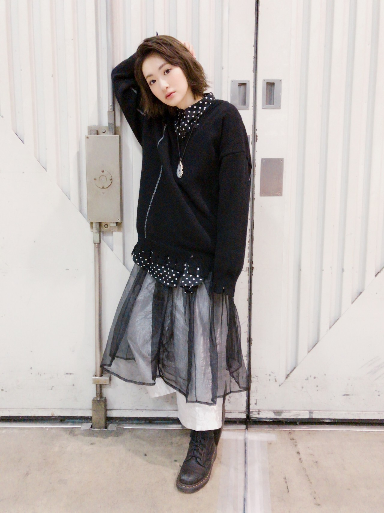

生駒です(*´꒳`*)
昨日はパシフィコ横浜にて個別握手会が開催されました来てくださった皆さんありがとうございました！！
久しぶりの5部。
しかも関東。
私、埋められない。
って怖かったです。
ずっとずっと怖かったです。
ですが、皆さんがその不安を消してくれました。
有り難いです。
並んでくださるという事がどんなに有り難いことか。
選抜発表後の握手会だった事もあり、
おめでとうを言ってくださりありがとうございました！
私は、
簡単に言うと、
まだまだ乃木坂は上り坂なんだと、
まだ全然やる事いっぱいある。
いっぱいいっぱい成長しなきゃだめなんだと思っております。
生駒ふぁむの皆さんは福神入りを喜んでくださり素直に嬉しいです。
ただ、私はそれだけじゃないんだって思ってます。
結果出さないとダメなんだって思ってます。
ヒッサビサの2列目。
一歩前に出ただけかも知れませんが。
私が3列目で得たものはすごく大きく、
変わる事が今はとても心配です。
弱くなりたくないな、
こんな私をよろしくです(´；ω；｀)
めんどくさくてごめん〜(*´꒳`*)☆☆

ひなちまに撮ってもらったの(*´꒳`*)
着ているシャツはのんちゃんからのお誕生日プレゼント☆
この日のマフラーはよーこちゃんにお誕生日プレゼントでもらったマフラーにしたよ(*´꒳`*)
うれしいうれしい♡♡
のんちゃんはね、握手会終わりにずっとお話ししました。
のんちゃんは魔法使いだよ。
私の気持ちを全部理解してるんだもんっ！！
出会って2年くらいなのにっ！
ありがとう(*´꒳`*)(*´꒳`*)
ではっ
へばなっ☆彡